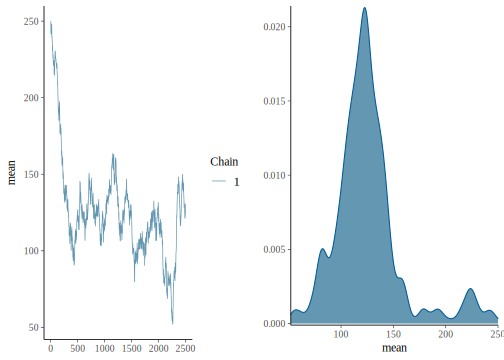
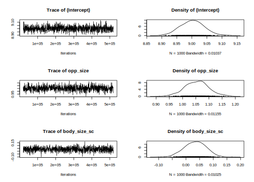
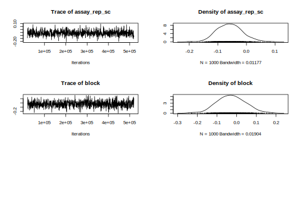
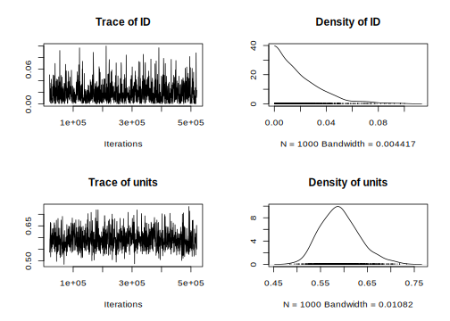

7.1 Lecture
Amazing beasties and crazy animals

Figure 7.1: Dream pet dragon
7.1.1 Bayes’ theorem
First, let’s review the theorem. Mathematically, it says how to convert one conditional probability into another one.
\[ P(B \mid A) = \frac{ P(A \mid B) * P(B)}{P(A)} \]
The formula becomes more interesting in the context of statistical modeling. We have some model that describes a data-generating process and we have some observed data, but we want to estimate some unknown model parameters. In that case, the formula reads like:
\[ P(\text{hypothesis} \mid \text{data}) = \frac{ P(\text{data} \mid \text{hypothesis}) * P(\text{hypothesis})}{P(\text{data})} \]
These terms have conventional names:
\[ \text{posterior} = \frac{ \text{likelihood} * \text{prior}}{\text{evidence}} \]
Prior and posterior describe when information is obtained: what we know pre-data is our prior information, and what we learn post-data is the updated information (“posterior”).
The likelihood in the equation says how likely the data is given the model parameters. I think of it as fit: How well do the parameters fit the data? Classical regression’s line of best fit is the maximum likelihood line. The likelihood also encompasses the data-generating process behind the model. For example, if we assume that the observed data is normally distributed, then we evaluate the likelihood by using the normal probability density function. You don’t need to know what that last sentence means. What’s important is that the likelihood contains our built-in assumptions about how the data is distributed.
The evidence (sometimes called average likelihood) is hareder to grasp. I am not sure how to describe it in an intuitive way. It’s there to make sure the math works out so that the posterior probabilities sum to 1. Some presentations of Bayes’ theorem gloss over it and I am not the exception 😄. The important thing to note is that the posterior is proportional to the likelihood and prior information.
\[ \text{posterior information} \propto \text{likelihood of data} * \text{prior information} \]
So simply put, you update your prior information in proportion to how well it fits the observed data. So essentially you are doing that on a daily basis for everything except when you ar doing frequentist stats 😄.

Figure 7.2: Bayesian Triptych
7.1.2 Intro to MCMC
We will now walk through a simple example coded in R to illustrate how an MCMC algorithm works.
Suppose you are interested in the mean heart rate is of students when asked a question in a stat course. You are not sure what the exact mean value is, but you know the values are normally distributed with a standard deviation of 15. You have observed 5 individuals to have heart rate of 104, 120,160,90,130. You could use MCMC sampling to draw samples from the target distribution.
We need to specify:
- the starting value for the chain.
- the length of the chain. In general, more iterations will give you more accurate output.
set.seed(170)
hr_obs <- c(104, 112, 132, 115, 110)
start_value <- 250
n_iter <- 2500 # define number of iterations
pd_mean <- numeric(n_iter) # create vector for sample values
pd_mean[1] <- start_value # define starting value
for (i in 2:n_iter) {
proposal <- pd_mean[i - 1] + MASS::mvrnorm(1, 0, 5) # proposal
lprop <- sum(dnorm(proposal, hr_obs, 15)) # likelihood of proposed parameter
lprev <- sum(dnorm(pd_mean[i - 1], hr_obs, 15))
if (lprop / lprev > runif(1)) { # if likelihood of prosposed > likehood previous accept
# and if likelihood is lower accept with random noise
pd_mean[i] <- proposal
} # if true sample the proposal
else {
(pd_mean[i] <- pd_mean[i - 1])
} # if false sample the current value
}
pd_mean <- as.mcmc(data.frame(mean = pd_mean))
mcmc_combo(pd_mean, combo = c("trace", "dens"))
summary(pd_mean)##
## Iterations = 1:2500
## Thinning interval = 1
## Number of chains = 1
## Sample size per chain = 2500
##
## 1. Empirical mean and standard deviation for each variable,
## plus standard error of the mean:
##
## Mean SD Naive SE Time-series SE
## 125.8105 32.8672 0.6573 13.3046
##
## 2. Quantiles for each variable:
##
## 2.5% 25% 50% 75% 97.5%
## 75.53 108.03 122.19 136.12 225.46set.seed(170)
hr_obs <- c(104, 112, 132, 115, 110)
n_iter <- 2500 # define number of iterations
n_chain <- 3
start_value <- c(250, 100, 50)
pd_mean <- array(NA, dim = c(n_iter, n_chain, 1), dimnames = list(iter = NULL, chain = NULL, params = "beta")) # create vector for sample values
for (j in seq_len(n_chain)) {
pd_mean[1, j, 1] <- start_value[j] # define starting value
for (i in 2:n_iter) {
proposal <- pd_mean[i - 1, j, 1] + MASS::mvrnorm(1, 0, 5) # proposal
if (sum(dnorm(proposal, hr_obs, 15)) # likelihood of proposed parameter
/ sum(dnorm(pd_mean[i - 1, j, 1], hr_obs, 15)) > runif(1, 0, 1)) {
pd_mean[i, j, 1] <- proposal
} # if true sample the proposal
else {
(pd_mean[i, j, 1] <- pd_mean[i - 1, j, 1])
} # if false sample the current value
}
}
color_scheme_set("mix-blue-red")
mcmc_combo(pd_mean, combo = c("trace", "dens_overlay"))
summary(pd_mean)## Min. 1st Qu. Median Mean 3rd Qu. Max.
## 41.65 99.32 109.68 112.71 122.52 250.00mcmc_combo(pd_mean, combo = c("trace", "dens_overlay"), n_warmup = 500)
pd_burn <- pd_mean[-c(1:500), , , drop = FALSE]
summary(pd_burn)## Min. 1st Qu. Median Mean 3rd Qu. Max.
## 51.98 100.71 110.38 111.42 122.69 163.58mcmc_combo(pd_burn, combo = c("trace", "dens_overlay"), iter1 = 501)
7.1.3 Inferences
7.1.3.1 Fixed effects
Easy peazy lemon squeezy just have a look at the posteriro distribution, does it overlap 0 yes or no.
talk about mean, median and mode of a distribution as well as credible intervals
7.1.3.2 Random effects
Quite a bit more harder. because constrained to be positive
- Interpreting posterior distribution
- DIC
- WAIC